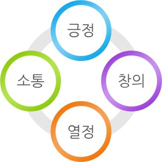

인재상
아임유의 최고 자산은 사람입니다.
긍정, 소통, 창의, 열정이 충만한 인재들이 꿈을 펼치는 곳!
아임유와 함께라면 그 꿈이 현실이 됩니다.
- 긍정적이고, 진취적인 마인드 소유
- 원활한 커뮤니케이션 역량
- 창의적인 문제해결 능력과 열정을 가지신 분

아임유의 최고 자산은 사람입니다.
긍정, 소통, 창의, 열정이 충만한 인재들이 꿈을 펼치는 곳!
아임유와 함께라면 그 꿈이 현실이 됩니다.
긍정, 소통, 창의, 열정으로 저희 아임유와 함께,
꿈을 현실로 만들어 나갈 인재를 찾습니다.
수시채용 (인력 충원이 필요할때 홈페이지 또는 채용사이트 공고를 통한 새로운 인재 채용)
기본이력서 양식 또는 채용사이트 온라인입사지원서
1차면접(실무면접) : 실무면접으로 개별면접, 집단토론 면접으로 구성되어 있습니다.
2차면접(임원진 면접) : 1차 전형 합격자를 대상으로 조직문화 및 핵심 가치에 부합하는 역량 및 가치관과 인성을 갖추었는지를 판단하기 위하여 역량면접을 실시합니다.
채용확정 : 개별통보